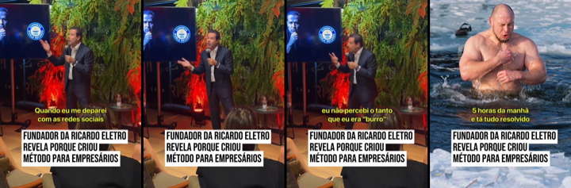
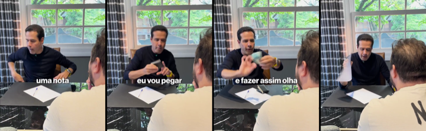
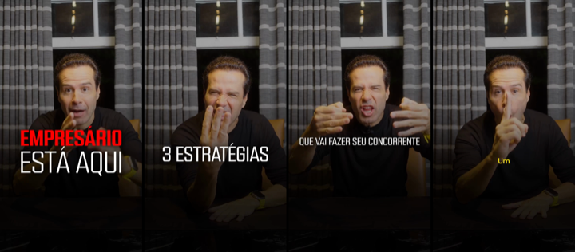

O que o dash mostra, o que os concorrentes estão rodando e o que produzir na semana pro público da imersão: dono de empresa que fatura acima de R$ 200 mil por mês.
Conta PERPETUO RGV, direto do dash de criativos. Formulário nativo e página de cadastro têm custos muito diferentes, então são comparados separados.
Últimos 7 diasR$ 131/leadR$ 184.124 · 1406 leads
Formulário · 7 diasR$ 119/lead1344 leads
Página · 7 diasR$ 405/lead59 leads
Últimos 30 diasR$ 101/leadR$ 742.434 · 7385 leads
Os vídeos com mais leads e melhor custo no dash, baixados e transcritos. A ideia é manter o miolo que converte e testar aberturas, tarjas e ajustes novos.
1[RGV][PER][VD][ORG][FEED][AD06][09102025]2.917 leads a R$ 41 · gancho 20,7% · 2min51 · ver o vídeo

O que é: O vídeo principal. Narrado com fotos do Abílio Diniz, da Luiza Trajano e do João Adibe: 'já pensou se você pudesse ser mentorado...?'. Depois apresenta o Ricardo com os números da Ricardo Eletro e o Ricardo explica os 3 dias.
Por que funciona: O miolo vende muito bem: autoridade com número e explicação clara dos 3 dias. O problema é a entrada, com foto parada e legenda pequena. Só 1 em 5 passa dos 3 segundos, então qualquer ganho na abertura multiplica o resultado.
Novas aberturas faladas
- “Só um bilionário do Brasil abre a porta da empresa dele pra você. E não é quem você tá pensando.”
- “1.100 lojas, 12 bilhões por ano, 45 mil funcionários. Agora imagina ter esse cara sentado do seu lado por 3 dias.”
- “Se a sua empresa fatura mais de 200 mil por mês e você ainda decide tudo sozinho, para 1 minuto.”
- “O Abílio não pode mais te mentorar. A Luiza não tem tempo. Mas tem um que tem.”
- “Você pagaria pra sentar 3 dias com o fundador da Ricardo Eletro?”
Novas tarjas
QUEM VAI TE MENTORAR?1.100 LOJAS · R$ 12 BILHÕES POR ANOSÓ UM BILIONÁRIO ABRE A PORTA PRA VOCÊ3 DIAS COM O FUNDADOR DA RICARDO ELETRO
O que mudar
- Pôr tarja grande no primeiro quadro, por cima da foto do Abílio. Hoje não tem tarja.
- Testar começar pelo trecho 'Só um. Ricardo Nunes' com os números, e deixar os outros empresários pra depois.
- Fazer um corte de 60 segundos, sem a parte longa da explicação dos dias, pra ver se segura mais.
2[RGV][PER][VD][FEED][AD36][02042026]616 leads a R$ 47 · gancho 28,9% · pausado · ver o vídeo
O que é: Selfie do Ricardo ao ar livre, sem produção, em tom de bronca: 'Você tá no regime simples? Pelo amor de Deus, empresário, presta atenção'. Mostra um papel de incentivo fiscal e fecha com 'para de ser amador'.
Por que funciona: Tom de recado sincero e uma dor de bolso clara. Está pausado com um dos melhores custos da conta, então vale reativar e fazer versões novas.
Novas aberturas faladas
- “Tá no Simples e fatura mais de 100 mil por mês? Você pode estar pagando imposto demais. Presta atenção.”
- “Empresário, olha esse papel aqui. Tem benefício fiscal no seu estado que ninguém te contou.”
- “Eu tinha loja nos 27 estados. Sei exatamente onde você tá perdendo dinheiro com imposto.”
- “Pelo amor de Deus, para de pagar imposto sobre faturamento se você ganha sobre lucro.”
- “Sabe quanto do seu faturamento vai pro governo todo mês? Faz a conta comigo.”
Novas tarjas
VOCÊ ESTÁ PAGANDO IMPOSTO DEMAIS?SIMPLES + R$ 100 MIL/MÊS = PREJUÍZOPARE DE SER AMADOR COM IMPOSTOO BENEFÍCIO FISCAL QUE NINGUÉM TE CONTOU
O que mudar
- Reativar o original enquanto as versões novas não ficam prontas.
- Abrir mostrando o papel do incentivo fiscal na cara da câmera, como prova visual.
- Gravar selfies curtas em lugares diferentes, como carro, loja e escritório, com a mesma bronca e uma tarja vermelha no topo.
3[RGV][PER][VD][FEED][AD05][13082025]572 leads a R$ 57 · gancho 42,3% · ver o vídeo

O que é: Ricardo no palco com uma tarja fixa grande: 'Fundador da Ricardo Eletro revela por que criou método para empresários'. Usa cortes de guru tomando banho gelado às 5 da manhã e diz que o mercado está cheio de picareta.
Por que funciona: Tarja forte desde o primeiro quadro e um inimigo claro, o guru. O gancho de 42% é dos melhores da conta.
Novas aberturas faladas
- “Banho gelado às 5 da manhã não paga o boleto da sua empresa.”
- “Eu olhei o mercado de mentoria e fiquei assustado com o que estão ensinando pro empresário.”
- “99% do que te ensinam na internet sobre empresa é teatro. Vou te mostrar o 1% que funciona.”
- “Por que o fundador da Ricardo Eletro resolveu ensinar empresário, depois de vender a empresa?”
Novas tarjas
O QUE O FUNDADOR DA RICARDO ELETRO PENSA DOS GURUSBANHO GELADO NÃO PAGA BOLETOMENTORIA DE VERDADE X TEATRO DE PALCO
O que mudar
- Manter a tarja fixa e trocar só a frase, uma por versão.
- Trocar o corte do banho gelado por outros clichês de guru, como frase no espelho e carro de luxo, com a fala do Ricardo por cima.
- Criar uma versão com número na tarja: 'R$ 12 bilhões por ano. E zero banho gelado'.
4[RGV][PER][VD][FEED][AD06][06032026]367 leads a R$ 63 · gancho 46,5%, o maior da conta · ver o vídeo
O que é: Tela dividida. Em cima a plateia do RGV com a tarja vermelha 'Empresário é pego na reforma tributária'. Embaixo um empresário em preto e branco gravando no celular: 'Eu fui pego na malha fiscal por 300 reais no Pix'. Depois vem o Ricardo.
Por que funciona: É o melhor gancho da conta. Tem um caso real, contado pelo próprio empresário, com um número pequeno e assustador: 300 reais no Pix. A tarja vermelha é de manchete.
Novas aberturas faladas
- “Ele caiu na malha fiscal por 300 reais no Pix. Você pode ser o próximo.”
- “Esse empresário teve o pedido do Simples negado. Olha o que ele perdeu.”
- “Recebeu no Pix do CNPJ? A Receita tá vendo.”
- “Achou que era pouco dinheiro pra Receita olhar. Errou.”
- “O imposto vai sair da sua venda antes do dinheiro cair na conta. E muito empresário nem sabe.”
Novas tarjas
EMPRESÁRIO É PEGO NA MALHA FINA POR R$ 300270 MIL EMPRESAS TÊM PEDIDO NEGADO NO SIMPLESA RECEITA ESTÁ VENDO SEU PIXSPLIT PAYMENT: O IMPOSTO SAI ANTES DO DINHEIRO
O que mudar
- Repetir a estrutura com cada notícia nova de imposto: tarja vermelha de manchete, depoimento curto em cima e o Ricardo embaixo. É o molde dos 3 vídeos semanais da linha 001.
- Pedir aos alunos do RGV vídeos curtos de celular contando um susto com imposto, pra virar o depoimento de cima.
- Trocar a plateia borrada por um print da manchete do portal, como prova oficial.
5[ADS RGV] VÍDEO NARRADO CLAUDINHO JURUNENSE355 leads a R$ 46 · gancho 32% · a melhor retenção da conta, 18,9% · ver o vídeo

O que é: Narrado por outra pessoa, não pelo Ricardo. Headline amarela e vermelha 'Esse empresário faturou R$ 2,5 milhões em apenas 1 único dia', imagens da loja Jurunense Home Center e explicação da Estratégia de Explosão de Vendas.
Por que funciona: É um case com número absurdo e concreto, em formato de notícia. O empresário se vê no lugar do Claudio. É o vídeo que as pessoas mais assistem até o fim.
Novas aberturas faladas
- “Uma loja de material de construção do Pará vendeu R$ 2,5 milhões em um único dia.”
- “Ele aplicou uma única estratégia e bateu o recorde de vendas da empresa em um dia.”
- “Como um home center vendeu num dia o que vendia num mês?”
- “Esse empresário saiu de 3 dias de imersão e fez o maior dia de vendas da história da empresa.”
Novas tarjas
R$ 2,5 MILHÕES EM 1 ÚNICO DIAO MAIOR DIA DE VENDAS DA HISTÓRIA DELEA ESTRATÉGIA DE R$ 2,5 MILHÕES
O que mudar
- Criar o mesmo molde com outros alunos e outros setores. No orgânico, o case 'vendeu 400 mil num único dia' fez 1,06 milhão.
- Fazer uma versão com o próprio Claudio falando 10 segundos, como prova social direta.
- Fazer uma versão por setor: indústria, distribuidora, clínica. A planilha pede variar o segmento.
6[RGV][PER][VD][FEED][AD48][02042026]307 leads a R$ 46 · gancho 31% · pausado · ver o vídeo

O que é: Cena de mesa: o Ricardo conversa com um empresário e pega uma nota de 100: 'Vou rasgar essa nota. Você tem coragem?'. Explica que no Simples acima de R$ 100 mil o empresário paga sobre faturamento e não sobre lucro. Fecha com 'tem que ver se vai aprovar você'.
Por que funciona: Tem ação visual no primeiro quadro, a nota de 100, e uma metáfora fácil: deixar pra depois é rasgar dinheiro todo mês. A seleção no fim dá exclusividade.
Novas aberturas faladas
- “Você rasgaria uma nota de 100 agora? Então para de fazer isso todo mês no Simples.”
- “Toda vez que você paga imposto sobre faturamento, você faz isso aqui.”
- “Quanto você fatura? 400 mil? Então você tá rasgando dinheiro.”
- “Deixar o RGV pra depois custa isso aqui todo mês.”
Novas tarjas
VOCÊ RASGA R$ 100 TODO MÊS?SIMPLES ACIMA DE R$ 100 MIL = DINHEIRO RASGADODEIXAR PRA DEPOIS CUSTA CARO
O que mudar
- Reativar o original, que está pausado com R$ 46 por lead.
- Começar o vídeo já com a nota sendo rasgada, sem a fala antes.
- Fazer uma versão com uma pilha de notas, uma para cada mês do ano, pra mostrar o tamanho da perda.
7[RGV][PER][VD][FEED][PROBLEMAESOLUCAO][AD02][20032026]_1226 leads a R$ 49 · gancho 23% · ver o vídeo

O que é: Ricardo numa mesa com notebook, explicando lucro presumido contra lucro real, com palavras gigantes em vermelho aparecendo na tela ('LUCRO', 'SE O SEU LUCRO FOR 50%'). Fica nervoso: 'eu fico doente'.
Por que funciona: Ensina algo técnico de forma emocional e mostra que ninguém fala disso pro empresário. O custo é bom, mas o gancho é baixo porque abre com conta.
Novas aberturas faladas
- “Se o seu lucro é de 8% e você está no lucro real, você pode estar pagando o dobro de imposto.”
- “Eu fico doente quando vejo empresário pagar o dobro de imposto por falta de conta.”
- “Lucro presumido ou lucro real? Errar essa escolha pode dobrar o seu imposto.”
Novas tarjas
ESCOLHER ERRADO DOBRA SEU IMPOSTOLUCRO PRESUMIDO OU REAL?EU FICO DOENTE COM ISSO
O que mudar
- Abrir pela emoção ('eu fico doente') em vez da conta.
- Pôr a tarja fixa no topo em vez das palavras soltas.
- Fazer a versão em tela dividida, com uma conta simples desenhada em cima e o Ricardo embaixo.
8[RGV][PER][VD][AD07][09072026]138 leads a R$ 248 · gancho 14,7%, o pior dos vencedores · é o que mais traz cadastro na página · ver o vídeo

O que é: Ricardo em fundo escuro, com texto 'Empresário está aqui / 3 estratégias que vão fazer seu concorrente tremer'. Lista diferencial, explosão de venda e marketing.
Por que funciona: O miolo funciona: é o vídeo de página com mais cadastros. Mas só 13% a 15% passam dos 3 segundos. A planilha, na linha 005, já pede manter o vídeo e trocar só a abertura.
Novas aberturas faladas
- “Sua empresa cresceu e o lucro não acompanhou?”
- “3 dias pra sair com o plano da sua empresa pronto.”
- “A Casas Bahia era imbatível no carnê. Qual é o seu diferencial?”
- “Seu concorrente tá vendendo mais que você com o mesmo produto. Sabe por quê?”
Novas tarjas
SUA EMPRESA CRESCEU E O LUCRO NÃO?3 ESTRATÉGIAS QUE FAZEM O CONCORRENTE TREMER3 DIAS · PLANO DA EMPRESA PRONTO
O que mudar
- Trocar só os primeiros 3 a 5 segundos, uma abertura por versão, como pede a planilha.
- Pôr cena de bastidor do evento, com a sala cheia, antes da fala.
- Clarear o fundo ou pôr faixa vermelha. O fundo escuro some no feed.
Linha 001 · Notícia que mexe no bolso do empresário · 3 vídeos pra 15/10
Faixa vermelha com a manchete nos 3 primeiros segundos, legenda embutida, Ricardo em corte de palco ou falando pra câmera, e fecho 'é isso que a gente resolve em 3 dias, de empresário para empresário'. Sempre ligar o imposto ao método, nunca manchete solta. Tamanhos 1080x1920, 1080x1350 e 1080x1080.
1
Simples ou regime novo: 270 mil pedidos negados
Faixa vermelha: '270 MIL EMPRESAS TIVERAM O PEDIDO NEGADO NO SIMPLES'. Fala: 'Se a sua empresa é do Simples, presta atenção nos próximos 30 segundos.'
Formato: Tela dividida: em cima o print oficial da Receita, embaixo o Ricardo no palco. A faixa vermelha corta a divisão.
Roteiro:
- 0 a 3s · Faixa com a manchete e o Ricardo olhando pra câmera.
- 3 a 15s · Explica a escolha: quase 1,3 milhão de empresas já decidiram entre o Simples e o regime novo do IBS e da CBS, segundo a Receita.
- 15 a 30s · A consequência pro caixa: quem vende pra outra empresa pode perder cliente se não gerar crédito de imposto. É a mesma ideia do vídeo do Simples em 2027, que já está rodando.
- 30 a 45s · Ponte: 'decisão de imposto é decisão de estratégia. É isso que a gente resolve em 3 dias, de empresário para empresário.' CTA pro formulário.
Prova social: Print do comunicado oficial da Receita no gov.br com os números, mais a manchete do Portal Contábeis sobre os 270 mil indeferidos. Se tiver, um corte de aluno contando que mudou o regime depois do RGV.
Variações pra testar:
- Abertura com número: '1,3 milhão de empresas já escolheram. E você?'
- Selfie de recado, sem produção, mesma fala
- Versão quadrada com a faixa no meio pro feed
Baseado em: Notícia · Gov.br / Receita Federal · Notícia · InfoMoney
2
Split payment: o imposto sai antes do dinheiro chegar
Faixa vermelha: 'O IMPOSTO VAI SAIR DA SUA VENDA ANTES DO DINHEIRO CAIR NA CONTA'. Fala: 'Você vende 100 e recebe 70. E isso já tem data pra começar.'
Formato: Corte de palco com faixa vermelha e um gráfico simples na tela: 100 entra, 70 cai na conta.
Roteiro:
- 0 a 3s · Faixa e a frase do 100 que vira 70.
- 3 a 20s · O que é o split payment em uma frase: o banco separa o imposto na hora da venda. O Portal Contábeis discute se a obrigatoriedade fica pra 2028.
- 20 a 35s · O que muda no caixa: acabou o capital de giro do imposto, e quem trabalha com margem apertada sente primeiro.
- 35 a 45s · Ponte pro RGV e CTA.
Prova social: No orgânico do Ricardo, split payment já rendeu duas vezes: 207 mil views e 139 mil views com tela dividida e 'comente LEÃO'. Usar trecho desses vídeos como prova de que o tema já pegou.
Variações pra testar:
- Abertura com pergunta: 'Você sabe quanto da sua venda vai ficar no banco a partir de 2027?'
- Tela dividida com a manchete em cima
- Versão narrada com B-roll de loja e maquininha
Baseado em: Notícia · Portal Contábeis
3
Casas Bahia: R$ 17 bilhões de dívida e o erro de caixa
Faixa vermelha: 'CASAS BAHIA: 298 LOJAS FECHADAS E R$ 17 BILHÕES EM DÍVIDA'. Fala: 'Eu fui concorrente deles por décadas. Vou te mostrar o erro que nenhuma manchete conta.'
Formato: Tela dividida: em cima a manchete do Times Brasil com a foto da loja, embaixo o Ricardo. É o formato que a V4 roda há 63 dias em 1º lugar.
Roteiro:
- 0 a 3s · Faixa e o Ricardo.
- 3 a 20s · Os números da perícia: estoque 40,5% menor, 4.647 pessoas a menos, 298 lojas fechadas, passivo de R$ 17,3 bilhões.
- 20 a 35s · A lição pro dono que fatura acima de R$ 200 mil: estoque e prazo comem o caixa antes da venda cair.
- 35 a 45s · Ponte pro RGV e CTA.
Prova social: A autoridade do Ricardo como fundador da Ricardo Eletro, e o react dele sobre a Casas Bahia que fez 1,67 milhão no orgânico.
Variações pra testar:
- Abertura só com o número: 'R$ 17 bilhões'
- Ricardo andando na frente de uma loja, sem palco
- Versão horizontal pro YouTube, linha 008
Baseado em: timesbrasil.com.br
Reserva: 9 milhões de empresas inadimplentes. Faixa: 'R$ 238 BILHÕES EM DÍVIDAS ATRASADAS DE EMPRESAS'. Fala: 'E quase sempre começa no prazo que o dono deu pro cliente.' Notícia · Exame
Classificados olhando as capas dos anúncios no topo de verba e dos Reels que viralizaram. Anúncio no ar há 30 dias ou mais conta em dobro.
Headline com tarja
Onde está funcionando: Marcus Marques roda há 508 dias em 1º lugar um vídeo com a tarja 'Você tem colaboradores que pensam assim!'. É o formato mais presente entre os vencedores dos concorrentes.
Como fazer no RGV: Padronizar a faixa vermelha, que já dá 47% de gancho nos vídeos de notícia, em todo vídeo do Ricardo. Isso inclui o vídeo principal, que hoje abre sem faixa. A frase da faixa é uma dor de dono, como 'sua empresa cresceu e o lucro não acompanhou?'.
Tela dividida com caso real
Onde está funcionando: A V4 roda há 63 dias em 1º lugar o caso do Arroz Tio João: em cima a marca com faixa vermelha, embaixo o apresentador. O Caio Carneiro usa depoimento em cima e palco embaixo.
Como fazer no RGV: Em cima a empresa da notícia ou a empresa do aluno, embaixo o Ricardo explicando. Serve pros vídeos de notícia e pra linha 004 de caso real.
Qualificar o faturamento na primeira frase
Onde está funcionando: Os testes novos que já entraram em 1º lugar de verba abrem qualificando o faturamento: V4 com 'você fatura acima de R$ 100 mil ao mês' e Alfredo Soares com 'se você fatura acima de 1 milhão por ano'. O vencedor do G4, no ar há 42 dias, fala em 'empresários que lucram 1 milhão por ano'.
Como fazer no RGV: Abrir com 'se a sua empresa fatura mais de R$ 200 mil por mês...'. Filtra curioso e conversa direto com o público da imersão. Testar como abertura nova do vídeo principal.
Print de tela: notas, caixinha de pergunta, mensagem
Onde está funcionando: João Kepler roda há 201 dias um print do app Notas convidando empresários. Alfredo Soares e Tallis Gomes estão com caixinha de pergunta e print de mensagem nos testes novos. Na planilha, a imagem com caixinha de pergunta do RGV teve o melhor CTR, 7,89%.
Como fazer no RGV: Nota no celular do Ricardo: 'Procuro 100 donos de empresa que faturam acima de 200 mil e não têm controle do caixa'. Ou um print de WhatsApp de aluno com o resultado, como prova social.
Selfie de recado
Onde está funcionando: G4 com selfie no carro respondendo caixinha, Alfredo Soares em selfie com figurinha de link. No dash, a selfie do Ricardo (AD36) fez 616 leads a R$ 46,95 e está pausada.
Como fazer no RGV: Reativar ou regravar a selfie, em tom de recado e sem produção, como pede a linha 006.
Anti-palestra motivacional
Onde está funcionando: O Bruno Nardon lançou há 2 dias '3 dias de imersão sem palestra motivacional', já em 1º lugar de verba dele. No orgânico do Ricardo, a crítica aos gurus de marketing fez 120 mil.
Como fazer no RGV: É o território natural do Ricardo, de empresário raiz: 'aqui ninguém vai te mandar abraçar árvore. Vai sentar com dono de empresa e sair com o plano'. Serve pra linha 003 de evento.
Versão por setor
Onde está funcionando: O G4 testa uma peça só pra 'dono de escritório de advocacia' e o Janguiê Diniz uma pra 'empresário do Nordeste', os dois nos testes novos.
Como fazer no RGV: O mesmo vídeo com a primeira frase trocada: dono de loja, de distribuidora, de indústria, de clínica. A planilha já pede variar o segmento na linha 004.
Ligação no telefone
Onde está funcionando: A Camila Farani colocou um vídeo dela ao telefone entre os testes novos. No orgânico do Ricardo, a ligação é o recorde histórico: 4,6 milhões.
Como fazer no RGV: Anúncio de 30 a 45 segundos com o Ricardo ligando em viva-voz pra um aluno e perguntando o que mudou depois do RGV. Junta prova social com o formato mais forte dele.